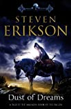

[caption id="" align="alignleft" width="104" caption="Dust of Dreams"][/caption]
Grabbed this book a week or two ago and have been steadily pulling myself through it. Not done yet, some 300 pages left. I have crappy memory so if I write down what's going on right now, maybe that will help me remember the book later :)
It is the 9th book in the series (there are other novellas before, in between these if you look at things chronologically) and it's happening at the same time as Toll the Hounds and it's in a 'pair' with The Crippled God - the fabled last book of the series.
Beware - this post contains spoilers. If you haven't read the previous works in this series you probably shouldn't keep on reading.
I like that whenever people see me reading an Erikson book they always say wow it's so big and then their jaws drop when I say it's the 9th in the series :p Some of the books do feel longer than others, it all depends what is happening, perhaps if there are long stretches in the book about characters that I don't like or feel a 'connection' to, the book will feel longer.
Moving on - closer to topic:
The Akrynnai vs. Barghast war in this book I don't feel much for and I'm kind of relieved now when it appears to be coming to a conclusion (some 300 pages left). Maybe that's because I hope the Malazans will do something. Or maybe this will start making more sense in the 2nd book.
There was a lot about the Bonehunters in the beginning of the book but pretty soon they set out on a march - and there's not much about the march - as there's been quite a lot about that in the previous books I can understand why there's less of it, not that I particularly like it. Things like scorpion matches/bets and the dark humor might be what I like best, majestic battles do get a bit boring/repetitive? Or maybe have I also turned into one of the veterans in the Bonehunters? Been there, done that, "just get on with it for feck sake".
The other groups I do actually enjoy - the Taxilian/Ghost investigation inside that huge mechanism - the snake of children walking in the desert (I actually read longer poems here, which I must admit I usually don't when they are in the beginning of each chapter, although if I paid more attention that would probably give me more clues as to what is happening). Do you read the poems? Do you ever read poems? Any ideas / tips for how to get my interest up a bit? Please comment or drop me an e-mail :)